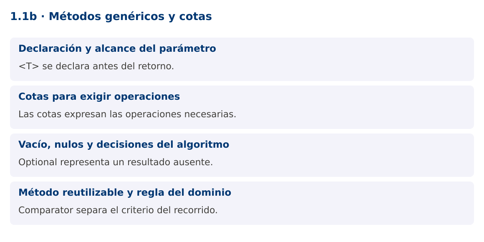

Programación Aplicada
1.1b. Métodos genéricos y cotas

Autor: Ing. Pablo Torres, Mgtr.
Unidad: 1. Programación genérica
Proyecto de trabajo: CampusMonitor
Inicio del curso · Presentación editable · Ver en el navegador
1. Conceptos y ejemplos
Contexto
Una vez representadas las lecturas, CampusMonitor necesita seleccionar la mayor lectura y filtrar catálogos. Copiar un método para cada modelo introduce versiones que se desincronizan. Un método genérico permite parametrizar la operación sin exigir que toda la clase sea genérica.
Antes de empezar
Recupera el avance de 1.1a. Conserva sus comandos y evidencias. Revisa el ejemplo completo antes de implementar la PC. Las demostraciones del material se ejecutan separadas del proyecto personal.
1.1. Declaración y alcance del parámetro
Un método genérico declara
El compilador infiere T a partir de los argumentos y del contexto. También puede indicarse explícitamente con Utilidades.
static <T> T identidad(T valor) {
return valor;
}
String id = identidad("S01");
1.2. Cotas para exigir operaciones
Una cota restringe los tipos admisibles y habilita operaciones.
La forma <T extends Comparable<? super T>> es útil para un máximo con orden natural. Las cotas múltiples se separan con &: si hay una clase, aparece primero y solo puede haber una. Expresa únicamente los requisitos del algoritmo, porque cada cota adicional reduce la reutilización.
static <T extends Number> double convertir(T valor) {
return valor.doubleValue();
}
1.3. Vacío, nulos y decisiones del algoritmo
Un método máximo debe definir qué ocurre con una colección vacía. Devolver null traslada una comprobación implícita al cliente. Optional
La selección recorre n elementos y conserva solo el mejor candidato: tiempo O(n) y memoria auxiliar O(1). No necesita ordenar toda la lista. Si dos elementos empatan, este algoritmo conserva el primero. La política de desempate forma parte del comportamiento observable y debe aparecer en las pruebas.
1.4. Método reutilizable y regla del dominio
La utilidad no conoce sensores, estudiantes ni productos. Recibe datos y una estrategia de comparación. El cliente define que una lectura es mayor por su valor o por su identificador, sin cambiar el recorrido. Esa separación reduce dependencias y prepara el uso de Strategy en 1.4.
En un sistema real no se debe comparar indiscriminadamente una temperatura con una ocupación solo porque ambas son Number. CampusMonitor debe agrupar lecturas por magnitud y unidad antes de calcular máximos. Reutilizar código no elimina la semántica del problema.
Mapa de conceptos

2. Demostración guiada
2.1. Problema y contrato
Una vez representadas las lecturas, CampusMonitor necesita seleccionar la mayor lectura y filtrar catálogos. Copiar un método para cada modelo introduce versiones que se desincronizan. Un método genérico permite parametrizar la operación sin exigir que toda la clase sea genérica.
La implementación siguiente es una demostración resuelta. La PC de la sección 3 requiere desarrollar una ampliación propia sobre CampusMonitor.
Archivo completo: MetodosDemo.java.
package edu.ups.pap.u01;
import java.util.*;
public class MetodosDemo {
record Medicion(String sensor, double valor) {}
static <T> Optional<T> maximo(List<T> datos, Comparator<? super T> orden) {
Objects.requireNonNull(datos);
Objects.requireNonNull(orden);
T mejor = null;
for (T actual : datos) {
Objects.requireNonNull(actual, "No se admiten elementos nulos");
if (mejor == null || orden.compare(actual, mejor) > 0) mejor = actual;
}
return Optional.ofNullable(mejor);
}
public static void main(String[] args) {
var datos = List.of(new Medicion("S01",22.5), new Medicion("S02",27.2),
new Medicion("S03",24.0));
var orden = Comparator.comparingDouble(Medicion::valor);
System.out.println(maximo(datos, orden).orElseThrow());
System.out.println(maximo(List.<Medicion>of(), orden));
System.out.println(maximo(List.of("Aula", "Laboratorio"),
Comparator.comparingInt(String::length)).orElseThrow());
}
}
2.2. Ejecución
Desde la raíz de este repositorio, con JDK 25:
java 01/1.1-fundamentos/02-metodos/ejemplos/MetodosDemo.java
Con el proyecto Gradle de demostraciones:
cd demostraciones
./gradlew runDemo -Pdemo=1.1b
En Windows usa gradlew.bat. Ejecuta cada demostración desde una terminal nueva o vuelve a la raíz antes de cambiar de contenido.
2.3. Resultado y lectura de la ejecución
Medicion[sensor=S02, valor=27.2]
Optional.empty
Laboratorio
- Identifica los datos iniciales y las precondiciones que la demostración valida.
- Sigue las llamadas desde
mainoloopy relaciona las operaciones con los conceptos de la sección 1. - Contrasta el resultado con la salida esperada del ejemplo. Si el orden es concurrente, compara la invariante y no el orden de impresión.
- Cambia un dato del ejemplo y predice el resultado antes de ejecutarlo. Registra cualquier diferencia y su causa.
3. PC1.1b · Práctica de clase
3.1. Ampliación del proyecto
Esta actividad se resuelve en tu repositorio icc-pap-campusmonitor-apellido. Mantén la funcionalidad anterior. No reemplaces tu solución con los archivos de demostración del material.
- Reutiliza las lecturas Double de la PC anterior. Implementa seleccionar(List
, Predicate<? super T>) que devuelva una lista nueva y no modifique la entrada. - Filtra temperaturas mayores a 25 °C y calcula el máximo con un comparador. Una lista vacía debe producir ausencia de resultado.
- Demuestra la reutilización de seleccionar con una lista de sensores por ubicación. No copies el recorrido para el segundo tipo.
3.2. Comprobación y evidencia
Prueba los casos de esta sección y registra entradas, salida real y explicación. Incluye una ejecución normal y un caso de error. La evidencia debe permitir repetir el resultado desde el commit entregado.
| Caso que debes revisar | Comportamiento requerido |
|---|---|
| 22.5, 27.2, 24.0 con umbral 25 | Solo 27.2 |
| Lista vacía | Lista filtrada vacía y máximo ausente |
| Dos máximos iguales | Desempate documentado |
En evidencias/PC1.1b.md agrega: cambio realizado, archivos principales, comandos de ejecución, tabla de pruebas y enlace al commit final. No añadas una rúbrica a esta PC.
3.3. Commits de la actividad
git status
git add src evidencias
git commit -m "feat(pc1.1b): metodos-genericos-y-cotas"
git push
git log -1 --format=%H
Ajusta las rutas de git add a los archivos que realmente creaste. Incluye también configuración o SQL si cambiaste esos archivos. El último comando muestra el hash real que debes enlazar en tu evidencia.
Lo esencial
se declara antes del retorno. - Las cotas expresan las operaciones necesarias.
- Optional representa un resultado ausente.
- Comparator separa el criterio del recorrido.